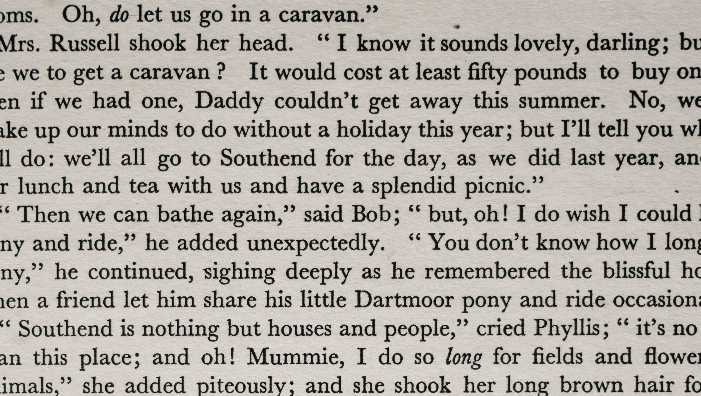
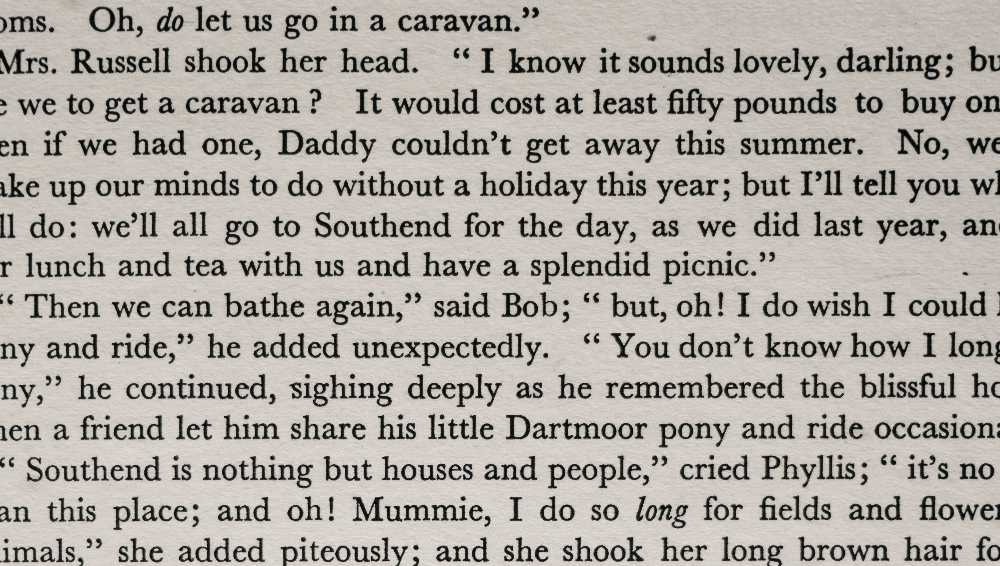

I have eight years of professional experience within the Data Science and Analytics fields. I also have completed my Master of Science in Analytics (MSAn) degree from American University. Please see a project below to showcase how I would be able to contribute to your organization's mission. Please feel free to contact me directly. My contact information is listed at the bottom of the page..
"The best decision-makers are always armed with the best information and data!" ~ George Raveling
 

Sentiment Analysis was used to support a particular restaurant's ability to compare their restaurant rank to other restaurants based on consumers' text reviews.
.jpg)
An 80/20 split was done to create the model and verify accuracy. Ratings and reviews were the essential variables in predicting the ranking the restaurant receives.
A descriptive analysis was conducted to obtain a better understanding of the data. There are just over 12,000 restaurants included in the data set. The data set had ten variables where some restaurants identified themselves as multiple cuisine types. A histogram and Jitter Plot was used to visualize the data.

Data cleaning is the first step in any data exploration. In this step, NAs were filtered, and certain variables were transformed. The code for the transformation was not included in the work sample..